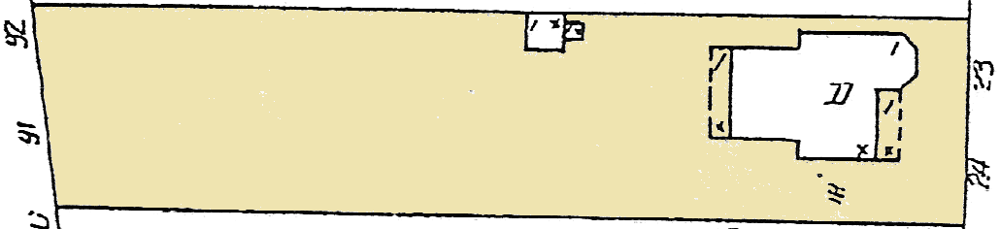
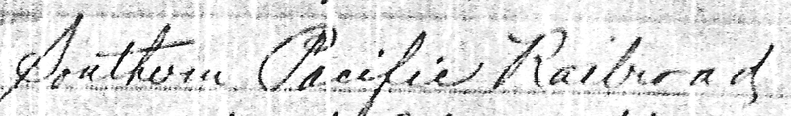
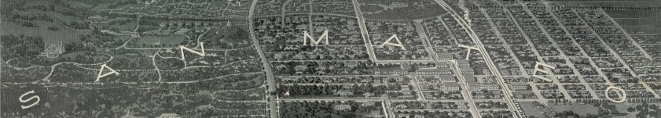
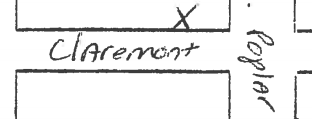
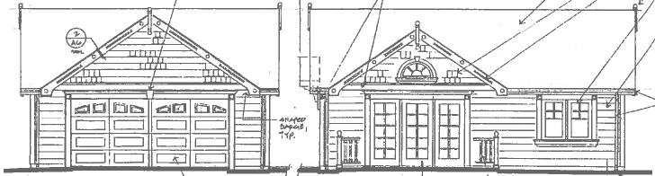

| < show overview show more detail > | ||
| California becomes the 31st state of the United States. | 1850 | |
|---|---|---|
| Railroad line from San Francisco to Palo Alto is completed, including a stop at
the San Mateo
depot (photo circa 1865-1887).
|
1863 | |
| San Mateo County records William Howard's Map of the Western Addition. | 1887 | |
| Crystal Springs Dam is completed, the largest concrete-block dam in the world.
|
1889 | San Mateo County records a Map of the subdivisions of blocks in the Western
Addition on April 12, 1889.
transcript of cover page...THE CALIFORNIA HOME & FARMVol. I. — San Francisco, April, 1889. — No. 6. Dear Sir: On Saturday April 6th 1889 we will offer without reserve to the highest bidder the heretofore reserved portion of the Howard Estate situated in a central part of the beautiful suburban Town of San Mateo, known as the Western Addition. Streets graded; Water piped; Shade and ornamental trees line the Avenues and Streets; Magnificent country seats and beautiful suburban homes surround the property. Schools, churches, and social advantages are unsurpassed. The offering is without question the most desirable one ever made in the State. San Mateo is now reached by fast train in 35 minutes and the times will soon be reduced to 22 minutes. This property must soon double and quadruple the present selling prices. Send for map etc. to Briggs Fergusson, 314 California St S.F. P.S. Round trip fare 50c. transcript of last page...16 — THE CALIFORNIA HOME & FARM. Special railroad excursion Briggs, Fergusson & Co. Auction sale! Excursion tickets Special train leaves San Francisco on Saturday,
April 6, 1889, 9.15 A. M. Grand Credit Auction Sale! Terms of sale: One-third cash; balance in one and two years,
with interest on deferred payments at 7 per cent. per annum. For full
particulars, maps and catalogues, address |
| 1890 | Amelia Vollers signs a building contract with
James
Tannahill on September 30, 1890.
There is also a record of a "12 Oct 1890" "Builders Contract" between "Vollers, Amelia M." and "Tannahill, J.S.", as well as a record of a "30 Sept 1890" contract between "Vollers, Henry et al" and "Tannahill, J.S.". (This information was published by Russ Brabec of the San Mateo County Genealogical Society, based on records that can be found at the San Mateo County Recorder's Office). We’re not sure if these records represent three different contracts or just a single contract, and if there was more than one contract we don't know if they all were for the property at 353 N Claremont or whether the Vollers hired Tannahill to build on other properties as well. Amelia and her husband and son purchased several plots of land around this time (most of the plots seem to have been across the street, in what is now the California Water Service Company property). Amelia sold one plot of land in 1903 to her daughter Catherine Eva Schmitt (or Schmitz). |
|
| Birdseye view drawing of San Mateo is published.
|
1891 | Amelia Vollers first pays property taxes on
the new house.
A property tax of $11.90 was paid on Nov. 30, 1891 by "Vollers, A.M." for Lot 10 of Block 23. The land was valued at $100, and the "Improvements Thereon" (the house) was $800, for a total property value of $900 ("After Deductions"), which then appears as $990 "After Equalization by the State Board of Equalization". Vollers, A.M. also paid a separate tax of $1.35 on Nov. 30, 1891 for Lot 12 of Block 24, which was valued at $100 and had no improvements listed. Lot 12 of Block 24 would have been just across the street and 100 feet to the north of the Vollers House. Vollers, A.M. also paid a tax of $1.05 on Nov. 30, 1891 for $75 of property comprised of "Musical Instru" valued at $50 and "Furn" valued at $25. In the previous year, on Nov. 17, 1890, she had paid a tax of $2.05 for $150 of property comprised of a "Piano" valued at $50 and "Furn" valued at $100. In 1891, Ida J. Vollers paid tax for the property at "Lot 10-11" of Block 24, which was directly across the street from Amelia's house at Lot 10 of Block 23. Ida's land was valued at $200, and the "Improvements Thereon" (the house) was $800, with a mortgage of $750. |
| The San Mateo Gas Light Company is incorporated. | 1892 | |
| Map of San Mateo county is published.
|
1894 | |
| "An electric light company has recently been formed among the residents of San Mateo." | 1895 |
According to the
San
Mateo, Burlingame, and Belmont Souvenir by E. McD. Johnstone and A. L. Crane
(published "about 1895"), "an electric light company has recently been formed
among the residents of San Mateo, — with a capital stock of $25,000, of
which $20,000 has been actually subscribed. The company will shortly be prepared
to furnish electric light to consumers from Burlingame to Belmont."
|
| 1901 |
The Vollers House appears on the July 1901 Sanborn maps.
  |
|
| 1903 | Hancke Vollers dies at 69 or 70 after being "struck by electric car" near Burlingame. | |
| The Great 1906 San Francisco Earthquake. | 1906 | Amelia Vollers dies at 65 and is buried in
Mountain View cemetery in Oakland, CA, according to
this FindAGrave.com entry.
|
| Birdseye view drawing of of San Mateo is published.
 |
1907 | |
| 1943 | Sophie A. Severin sells the house to
Frank
and Dolfa Lavezzo on May 5, 1943. (The transaction was recorded on
May 19, 1943 in the Recorder's Book 1063, on page 177.)
Sophie is listed on this 1940 census roster, which describes her as a being a 76-year-old widow, educated to the 8th grade, born in Norway, and a naturalized citizen of the United States. She is listed as the homeowner of 15 E. Poplar Ave, and the census says she was living there in 1935 as well as 1940. |
|
| 1950 | A city housing report describes the house as a "2 Story Rustic" and gives it a rating of "B". | |
| 1957 | City of San Mateo sends an
inspection letter reporting that
the "the rabbit and chicken pens ... have become unsightly."
E. Lavezzo gets a building permit to have United Roofing to
reroof the house with a new composition shingle roof.
|
|
| 1958 | Dolfa Lavezzo gets a building permit to demolish the "rabbit hutches, chicken pens, and sheds" at the rear of the lot. | |
| 1959 | Louis Fraschieri gets a building permit to remodel the "enclosed porch" at the back of the house.
|
|
| 1962 | Louis Fraschieri gets permits to demolish the existing carport and build a new one.
|
|
| 1964 | The Vollers House is included in the 1964 Survey of Historic Buildings.

"Dolpha" Fraschieri is listed as the owner in the
Preliminary Visual Survey by
the Junior League of Palo Alto. This document is also available in the Archive Room at
the San Mateo History Museum.
Oliver Lavezzo is listed as her son, and his address is listed as 1102 Palm, San Mateo.
This survey claims that the original owner was the "Foreman of the Howard Estate".
|
|
| 1967 | The second page of this appraisal report shows the property having an assessed value of $27,600 on January 28, 1967. | |
| 1973 | The third page of this appraisal report give some clues about the house. As of 1973, the house had 1.5 bathrooms, a dishwasher, some linoleum floors, a raised concrete foundation, floor heat but no central heat, and a 440-square-foot 2-car carport with concrete floor and "corr-alum" roof. | |
| 1976 | The fourth page of this appraisal report shows the land as having an assessed value of $13,000 in 1976, down from $13,500 in 1974-75. | |
| 1978 | The Assessor's Map of the County of San Mateo shows the Vollers property as Lot 10 on Block 23, just as the April 12, 1889 version did. (Here's an un-highlighted version.) | |
| 1988 | Christopher & Marsha Doyle get a building permit to reroof the house. | |
| 1989 | The Vollers House is featured in the City of San Mateo Historic Building Survey.
|
|
| 1990 | City of San Mateo sends a code enforcement letter about: "Overgrowth of weeds. Trash. Unpainted building (house) and rundown condition." | |
| 1995 | Marsha Doyle has significant restoration and repair work done on the house.
repair work included some portion of the following...
|
|
| 1996 | The restoration and repair work begun last year continues in 1996. | |
| 1998 | City of San Mateo sends code enforcement letters.
|
|
| 2002 | City of San Mateo sends a code enforcement letter about garbage cans stored in public view. | |
| 2004 | Bo Thorenfeldt buys the Vollers House from Marsha and Christopher Doyle on June 30, 2004. Bo buys the house for $650,000, according to a later assessor's document. | |
| 2006 |
Bo Thorenfeldt hires Stewart Associates to draw up plans for the garage and secondary unit.
 |
|
| 2007 | A garage and a guest house are built behind the Vollers House.
Bo also does work in 2007 on the Vollers House itself.
|
|
| 2009 | Bo gets a building permit related to work on the cottage sprinkler system. | |
| 2010 |
Bo gets one last
building permit
related to work on the cottage sprinkler system.
Patricia McDaniel and Brian Skinner buy the Vollers House from Bo Thorenfeldt
for $755,000 on July 16, 2010.
Patricia and Brian have some repair work done...
|
|
| San Mateo Daily Journal posts an article about the Vollers House. | 2013 | Patricia McDaniel and Brian Skinner enter into a Historic Property Preservation Agreement with the City of San Mateo, and begin on a list of preservation and restoration projects. |
| 2014 |
Patricia & Brian arrange a site visit by an architectural historian.
Patricia & Brian submit a
National Register
of Historic Places Registration Form for the Vollers House.
Text from the National Register nomination...Summary ParagraphLocated in a residential neighborhood six blocks west of downtown San Mateo, the Amelia Vollers House is a one-and-one-half story, 1200 square-foot Queen Anne cottage, constructed in 1891. It has a steeply pitched hipped roof with a lower cross gable and a gable end dormer, and a front porch with a shed roof. The house has an irregular ground plan, resulting from insets on the north and south elevations as well as a prominent bay projecting from the lower cross gable. The wood-clad balloon framed house is built primarily from old growth redwood. The primary facade of the house is richly ornamented, with the exterior retaining most of its original decorative woodwork. The house is located on its original site, walking distance from the downtown San Mateo train station. The railroad line, which was key to the development of the neighborhood, runs directly behind the Vollers property and has been in continuous operation since the house was built, conveying commuters between San Francisco and San Mateo. The building retains a high degree of integrity, in location, design, setting, materials, workmanship, feeling, and association. Narrative DescriptionSettingThe Amelia Vollers House stands where it was originally built, in a residential neighborhood within walking distance of downtown San Mateo and the San Mateo train station. The lot where the house was built was part of a large, residential subdivision known at the time as the Western Addition. The subdivision was created in 1889 to capitalize on newly established regular train service between San Mateo and San Francisco, and proved attractive to buyers from a range of racial and class backgrounds. The neighborhood has retained its residential character over the past century, containing a mix of apartment buildings, single family homes, churches and schools. The neighborhood continues to be home to an unusually diverse mix of residents, just as the Western Addition did at the time the house was built. The boundaries of the Vollers House property have remained the same since 1901, and the railroad tracks directly behind the lot are still in operation, with commuter trains continuing to offer San Mateo residents easy access to San Francisco. Children visiting the house today like to stand in the backyard and watch the trains go by, just as children in the 1890s may have done. Overall, the historic setting of the property retains a high degree of integrity. ExteriorThe Vollers House is a one-and-one-half story cottage in the Queen Anne style, of the Spindlework decorative subtype. The house has a steeply pitched hipped roof with a front-facing lower cross gable and a gable end dormer. The hipped ridge runs front-to-back, which is a variation that was less common prior to the emergence of the Queen Anne style.4 The roof is clad in composition shingle. Near the roof-line, the house has one The cross gable projects beyond the rest of the facade, creating a three-dimensional texture that contributes to the asymmetry of the facade. The bargeboard on each side of the gable is ornamented with woodwork to create a relief of parallel lines, capped by bullseyes at the ends. The apex of the gable has a variant of a sunburst, and a carved sunburst appears below the gable end dormer window, just above the central bay window. Carved rectangular sunbursts, of a style that can be found in Queen Anne and Eastlake architectural pattern books from the 1880s, also appear on either side of the central bay window. Below the gable is a prominent cutaway bay window, typical of the Queen Anne style, with ornamented shaped corner brackets that include descending knobs. The bay windows are double-hung, wood frame, with bottom sashes that each have a single large pane of glass, and upper sashes that each have a large central pane bounded by smaller panes. The five other original ground-floor windows are also double-hung, wood frame windows, with decorative lintels and ogee lugs. Four of these five windows are placed in pairs. The wall surfaces of the front facade are used as primary decorative elements. The design of the house avoids plain flat walls through the use of such devices as bays, overhands, and projects, and by using a variety of different textures of woodwork on different surfaces. The exterior cladding is a mix of siding styles. The primary cladding is a horizontal board siding that has a flat, rather than canted, surface. The front gable has octagon-shaped The front facade of the house retains a high degree of integrity, with no alterations made to the design. While repairs have been made from time to time, they have been relatively modest, and the vast majority of the original materials and workmanship are intact, such that the facade retains all of its historic essential physical features. The front windows contain many of their original glass panes, including decorative tinted panes of yellow and rose in the parlor bay windows. The attic has a distinctive 25-pane dormer window. The front gable has a trio of windows that are an interesting reversal of the Palladian windows often found on Queen Anne houses, instead having a rectangular central nine-over-one window flanked by a pair of small quarter-circle windows. The front door is original, and is a glazed door with delicate incised decorative detailing, and a single large pane of glass set into the upper portion. We believe that almost all of the wooden ornamentation on the front facade is original: the bargeboard, the octagon-shaped The design of the front porch has not been altered. The porch retains most of its original ornamental woodwork, including a rich mix of incised, sawn, and turned decorations. The woodwork includes cut-out motifs, turned elements, railing fretwork, and a spindlework frieze that incorporates wooden beads. A small shed roof over the porch is supported by turned columns. On the porch stairs, the ornamental woodwork on the newel posts includes chamfered corners with lark's tongue ends. The Vollers House has an irregular ground plan, resulting not just from the prominent bay projecting at the front of the house below the lower cross gable, but also from insets on both of the side walls, which serve to break the horizontal continuity of the wall plane. This irregular ground plan takes advantage of the design freedom facilitated by balloon framing techniques. The side facades are much less elaborate than the front facade. They have simple horizontal board siding, and have only a few ornamental elements such as brackets under the eaves of the roof and decorative features around the windows. The original back porch that spanned the rear of the house has been enclosed and covered with a small shed roof. The five windows at the back of the house are aluminum-sash windows that date from a 1959 remodeling. At the back door, a small deck and back stairs also date from a later remodeling. Interior - floorplanIn most of the house, the layout remains true to the original design. The front door opens onto a small entrance hall. The hall opens into both the parlor and the dining room, which are connected to each other by a large pair of pocket doors. The house has two bedrooms of equal size, one off of the dining room and one off the entrance hall, each with its own shallow closet. The kitchen is located behind the dining room, and is separated from the dining room by a two foot thick section of wall that contains a fireplace and a built-in cupboard that opens into the dining room. There is a tall, steep, narrow flight of stairs leading from the kitchen to the attic. A small closet occupies the space under the attic stairs. The attic is a single large unfinished space. Modifications have been made to the original floorplan of the kitchen and to the area around it, which now includes a laundry room, a full bathroom, and a half bathroom. We know that in 1959 the kitchen, bath and porch were remodeled. An outline of the house that appears on a 1901 Sanborn map suggests there was originally a back porch in the area that is now enclosed in the house. We believe that as part of the 1959 remodeling the original back porch was enclosed, with half of the enclosed area having been used to enlarge the kitchen, and the rest used to create space for the laundry room and the half bathroom. The kitchen now has an 8-foot ceiling, as do the laundry room and bathrooms, whereas all the rooms in the unaltered front of the house have their original 10-foot ceilings. We believe that the kitchen would have originally had a 10-foot ceiling as well, and that the ceiling was lowered in 1959. Interior - detailsThe five front rooms of the house (entrance hall, parlor, dining room, and two bedrooms) retain a great deal of their original features and workmanship. They all have high , and the ceilings of the two public rooms (the parlor and dining room), feature matching leaf and flower rimmed plaster medallions. The doors and windows in these front rooms have their original wood casings, with bullseyes at the corners as is common in Queen Anne houses and can be found in Queen Anne and Eastlake architectural pattern books from the 1880s. Five of the doors are Eastlake style, with five-panel construction and details including chamfered corners with lark's tongue ends. The two bedroom closet doors have a plainer four-panel construction. All of the doors have their original wooden molding, porcelain door knobs, and distinctive Eastlake-style fittings, including filigreed steel door hinges, ornamented mortice boxes, and brass-plated strike plates and door knob face plates. These cast fittings include relief decorations with combinations of geometric and stylized Eastlake features. There is also a pair of large, 8-foot tall Eastlake-style pocket doors separating the dining room and parlor, each with 7-panel construction and with details including chamfered corners with lark's tongue ends. Four of the front rooms have their original sash windows and original window casings (eight windows in all). These windows feature Eastlake-style locks and sash pulls, and the parlor bay windows include decorative tinted glass panes of yellow and rose. The dining room still has its original fireplace, with a simple wooden mantelpiece and surround, a cheek of ceramic tile, and decorative cast-iron fretwork around the fire box. The wooden mantel, although modest by Victorian standards, exhibits a decorative detail typical of the Eastlake style by incorporating chamfered corners with lark's tongue ends. The tiles in the surround are glazed ceramic, laid out in a decorative earth-toned geometric design. The tiles are a mix of solid color tiles, marbleized tiles, and patterned tiles, with a more elaborate pair of matching embossed stylized sunflower tiles featured in the upper corners of the surround. These tiles match the appearance of tiles that were available in the 1890s from the American Encaustic Tiling Company of Zanesville, Ohio (founded in 1875). The fireplace's hearth is of matching glazed tiles, inset into plain floorboards. Additional interior details of the five front rooms include the original soft-wood floors, possibly made of fir, picture rails, 12-inch tall baseboards, cast iron coat hooks in the bedroom closets, and a built-in cabinet set into the rear wall of the dining room. The attic is almost completely unaltered from its original state. The original exposed redwood rafters and horizontal slats are untouched, and the undersides of the wood shingles are clearly visible between the slats. The attic still has its original windows and low knee walls, and the original steep, narrow attic staircase is still in place. There are a few remnants of knob and tube wiring in the attic. We believe this wiring was not original to the house, but it may have been added within the first two or three decades, and at this point the wiring itself may be considered a historic part of the house and worth preserving. Unfortunately, the house no longer has its original light fixtures, with one possible exception: a single kerosene chandelier that was later converted to electricity, which may or may not be original to the house, but which is an appropriate fixture given that the house had neither electricity nor gas service when it was first built. Non-contributing buildingsIn addition to the Amelia Vollers House, the property also contains two non-contributing buildings in the back yard: a small guest house and two-car garage. These buildings were constructed in 2007, and were therefore not present during the property’s period of significance. Exterior alterationsFrom 1995-1996, a number of repairs and alterations were made to the exterior of the Amelia Vollers House. The records of these changes were found through the Planning Department of the City of San Mateo. The glass pane in the front door was replaced in 1995-96. We believe that several of the large front window panes have also been replaced over the years. Repairs were made to the front porch in 1995-1996, including: reconstruction of the railing fretwork detailing at bottom of the stair railings, repairs to the stair railings, repairs to previous modifications of the stair newel posts, and the replacement of the front porch decking and porch stair risers and treads (which had already been replaced at least once before). The 1995-1996 work also included removing the front porch roof and installing a new plywood roof with felt underlayer and fiberglass seal tab composition shingles. A layer of modern shingles (asphalt or composition) has been added on the roof of the house on top of an earlier layer of wood shingles. The original chimney was removed to the roofline after the 1989 Loma Prieta earthquake, and a reconstructed chimney with a brick veneer was built in 1995-1996. The house has 4-foot tall wood skirtings that run below the front porch and around the circumference of the house from the ground-level foundation up to the bottom of the first floor. These skirtings are probably not original, and we do not know whether or not they match the appearance of whatever the house originally had in place there. The back side of the house has been altered far more than the front facade, but those alterations are for the most part not visible from the street. We believe the house originally had a back porch that may have been 6 feet by 25 feet, which was enclosed in 1959 and incorporated into the kitchen. A new back porch was then built, which was, in turn, entirely removed and replaced with another new porch in 1995-1996. The original back door was also removed at some point, and the current back door was installed in 1995-1996. The five windows at the back of the house are aluminum-sash windows that date from the 1959 remodeling. Research did not reveal the original materials of the building’s foundation. The house now has a concrete foundation, and significant earthquake fortification work was done in 1995-1996 and in 2007 to repair and replace parts of the foundation and to install crawl space support posts, bracing, and plywood shear panels. Records indicate that over the years there have been a variety of different outbuildings and livestock pens behind the house, various fences in different locations, and various different materials used as driveway paving. At this point we have no reason to believe that any of the landscaping on the property bears any relationship to what was originally there. Interior alterationsWhile the five front rooms of the house retain many original features, the kitchen does not. The back of the house was remodeled in 1959, and the original kitchen was extended by incorporating some of the space gained by enclosing the back porch. The house now has a laundry room off the kitchen, as well as one and half bathrooms, which are later alterations. The original kitchen windows were lost in the 1959 remodeling, and the kitchen, bathrooms, and laundry room now have aluminum-sash windows that date from the 1959 remodeling. The original back door was also removed at some point, as were any other original doors in the kitchen and bathroom area. The kitchen and bathrooms were remodeled at least twice more, in 1995-1996 and in 2007, and at this point the kitchen, bathrooms, and laundry room do not have any visible features that were original to the house, apart from the walls. One of the original bedroom windows was also lost in the 1959 remodeling, and that window was replaced again with a wooden window installed in 1995-1996. In the kitchen, bathrooms, and laundry room, a ceramic tile floor has been installed on top of the original fir floor. In the attic, a few small soffit vents have been added, as well as some knob and tube wiring, and a single light switch and light fixture. In 2010, as a safety measure, the attic stairs were repaired by adding sturdy new tread boards on top of the sagging original treads, but this is a reversible alteration. All of the rooms in the house now also have modern wiring, outlets, switches, and light fixtures. Piped water was available in the neighborhood when the lot for the house was first purchased, so the house may have had indoor plumbing at the time it was built. However, the plumbing has been repeatedly updated over the years and any original plumbing has been lost. Electricity and gas service did not arrive until after the house was built, so the house may have originally had kerosene lighting. At some point the house was connected to a natural gas main and gas appliances were added. A gas floor furnace was installed in the dining room floor, and the floor furnace was later replaced with a larger furnace located in the crawl space below the house, with ductwork and a half-dozen floor registers to distribute heat to the different rooms of the house. The house also now has a gas stove, water heater, and clothes-dryer. IntegrityThe house retains integrity of location, design, setting, materials, workmanship, and feeling, and association. LocationThe Vollers House is in its original location in a residential neighborhood of San Mateo, and retains its integrity of location. DesignWith the exception of the 1959 remodeling of the kitchen at the back of the house, there have been minimal alterations to the Vollers House. Both from the street and inside the house, the original Queen Anne Victorian design is clearly communicated. For example, the house has many iconic Queen Anne exterior elements, including a steeply-pitched hipped roof with a lower cross gable that overhangs a bay window in the wall below, spindlework ornamentation, and highly textured wall surfaces achieved through a variation of horizontal board siding, vertical board siding, and octagon-shaped SettingThe neighborhood surrounding the Vollers has retained its primarily residential character in the past century, although some original houses have been replaced with apartment buildings. The boundaries of the lot have remained the same since 1901, and the railroad tracks directly behind the property, which were key to the development of the neighborhood, still remain in operation today, conveying commuters between San Francisco and San Mateo. Children visiting the house today like to stand in the backyard and watch the passenger trains go by, just as children in the 1890s may have enjoyed standing in the yard to watch the passenger trains. Overall, the historic setting of the property retains a high degree of integrity. MaterialsThe Vollers House retains many of its original materials, including original ceramic fireplace tiles, porcelain door knobs, brass-plated strike plates and door knob face plates, filigreed steel door hinges, plaster ceiling medallions, wooden molding and trim, built-in cabinetry, wood flooring, old growth redwood framing, square cut nails, and original windows and doors. The materials of the Vollers House retain a good degree of integrity and serve to articulate the Queen Anne Victorian character of the property. WorkmanshipThe many details of original workmanship in the Vollers House, such as the turned porch columns, the ornamental bargeboard, and colored glass glass window panes provide physical evidence of construction methods and styles of Queen Anne Victorian style residential structures of the late nineteenth century in San Mateo. The building has most of its original fabric to communicate the workmanship associated with that style and has a good degree of integrity. FeelingThe Vollers House conveys a strong sense of late nineteenth century Queen Anne residential construction in San Mateo. The building retains its original massing, and the exterior has few modern intrusions. The Vollers House also conveys a sense of what life might have been like in the 1890s, with the original residents walking to San Mateo's small downtown to buy supplies, or catch the train to work in San Francisco. It retains a high level of integrity of feeling. AssociationThe Vollers House continues to be associated with the Queen Anne style, and remains an excellent example of the style in San Mateo. Statement of Significance Summary ParagraphThe Amelia Vollers House is eligible for the National Register of Historic Places under Criterion C at the local level of significance for embodying the distinctive characteristics of the Queen Anne style. A highly ornamented one-and-one-half story Queen Anne house, the Vollers House is one of the surviving works of the builder James Sharpe Tannahill. Tannahill also constructed the National Register listed Kearney mansion in Fresno, California, as well as houses in the towns of Redwood City and Menlo Park on the San Francisco peninsula, not far south of the Vollers House. The Vollers House is one of a very small number of Queen Anne homes remaining in San Mateo, and is an excellent example of the Queen Anne Spindlework style. The period of significance is 1891, the year the house was constructed. Narrative Statement of SignificanceThe Queen Anne style was a dominant domestic building style in the United States from about 1880 to 1900, and California has some of the most fanciful examples. The American Queen Anne style drew inspiration from the work of British architect Richard Norman Shaw, but added more complex designs, including steeper roofs with irregular shapes, asymmetric facades, and devices to avoid a smooth-walled appearance, such as cutaway bay windows and decorative detailing, including spindlework and patterned wood shingles shaped into various designs. It was an eclectic, decoratively exuberant style that “reached its most luxuriant flowering” in California, with its popularity attributed to a design that was easily adaptable to middle and upper class tastes and budgets, and to local building materials and preferences. In California and other western states, Queen Anne homes were typically made of wood. Wood was an inexpensive, widely-available material that could easily be transported by rail, did not require highly specialized construction skills, and was easily worked by hand or machine. In Queen Anne houses, wood was used for the framing, sheathing, window frames and sashes, doors, floors, lath, interior trim, and most of the decorative elements. Nonetheless, the wide adoption of the style was dependent on advances in technology. The advent of balloon framing enabled the production of buildings with more complex volumes and architectural features such as bay windows. Unlike traditional hewn timber construction, houses made with balloon framing were constructed of uniform lumber, with inexpensive two-by-four inch boards combined as upright studs and cross members and held together by mass-produced nails. Other technological advances enabled the mass production of parts, including wood milling machinery such as band saws and lathes that were used to cut repeating decorative elements and turn porch posts. Improvements in glass production in the 1880s enabled the production of large, single-pane window sashes, and mechanical mass-production technology facilitated decorative detailing such as the stamped decoration on interior door hinge plates. Greater access to and inexpensive production of house building publications, including trade catalogs, pattern books, and architectural periodicals, also promoted the adoption of the Queen Anne style. Many features of the Vollers House, both interior and exterior, serve to exhibit the advances in technology that made the Queen Anne style possible. Exterior features that are characteristic of the Queen Anne style include an asymmetric facade with irregular massing, a complex roofline comprised of a steeply-pitched hipped roof with a lower cross gable that overhangs a cutaway bay window in the wall below, spindlework ornamentation, and highly textured wall surfaces achieved through a variation of horizontal board siding, vertical board siding, and octagon-shaped “fish scale” shingles. The narrow, paired, double-hung, mostly single-lite windows are also typical of the style. The interior of the house also displays many of the characteristics of the Queen Anne style, including decorative wooden molding and trim, high ceilings and picture rails, large pocket doors between the parlor and dining room, a fireplace with a tiled hearth and surround, decorative brass strike plates and door knob face plates, and filigreed steel door hinges. Many of these ornamental details were made possible by the recent advances in milling and other technology, and by the abundance of wood available at the time. Despite the popularity of the Queen Anne style, in San Mateo and other cities on the peninsula to the south of San Francisco, Queen Anne homes built in the 19th century have mostly disappeared, lost to later development. The Vollers House is one of only a small number of Queen Anne style houses remaining in San Mateo. The Vollers House has been recognized for its architectural significance repeatedly by the city of San Mateo over the course of the past 50 years. The house was initially recognized as significant in a 1964 historic building survey. Later, the September 1989 City of San Mateo Historic Building Survey Final Report rated the Vollers House as one of One house, at 353 North Claremont, shows all of the exuberance associated with California’s version of the Queen Anne. ... The builder of this cottage lavished upon this small area ornamentation akin to the most elaborate large-scale dwelling. The Vollers House is also described in the July 1989 California Department of Parks and Recreation Historic Resources Inventory as part of the City of San Mateo’s survey of its historic resources: This house is an excellent example of the exuberant Victorian style known asQueen Anne.San Mateo has few houses such as this one, which display the full range of confusion and visual excitement so often seen in the style. Historical setting and significanceThe Amelia Vollers House is located in San Mateo, California in what was formerly called the Western Addition of the city. The Western Addition was originally part of Rancho San Mateo, a 6,538 acre estate purchased in the late 1840s by William Davis Merry Howard, a successful San Francisco businessman, from Cayetano Arenas, secretary to Governor Pio Pico, the last governor of Alta California. Some portion of the land passed to Howard’s son, William H. Howard, who, in 1889, hired surveyor Davenport Bromfield to lay out the Western Addition, a 250-lot subdivision near the downtown San Mateo train station. The lots were sold at auction, with the sale aggressively advertised, emphasizing all that San Mateo had to offer. A full-page, front-page advertisement in the California Home and Farm described the sale as follows: Dear Sir: On Saturday April 6th 1889 we will offer without reserve to the highest bidder the heretofore reserved portion of the Howard Estate situated in a central part of the beautiful suburban Town of San Mateo, known as the Western Addition. Streets graded. Water piped. Shaded and ornamental trees line the Avenues and Streets. Magnificent country seats and beautiful suburban homes surround the property. Schools, churches, and social advantages are unsurpassed. The offering is without question the most desirable one ever made in the State. San Mateo is now reached by fast train in 35 minutes and the times will soon be reduced to 22 minutes. This property must soon double and quadruple the present selling prices. Send for map, etc. to Briggs Fergusson, 314 California St S.F. P.S. Round trip fare 50c. (Emphasis in original.) As the advertisement suggests, the existence of a rail line between San Francisco and San Mateo was key to attracting buyers, and indeed, was key to the development of San Mateo, as it made travel between San Francisco and the Peninsula easier and more fashionable. The railroad had first arrived in San Mateo in 1863, spurring wealthy San Franciscans to purchase or further develop land on the Peninsula for summer or weekend estates. The creation of the Western Addition subdivision near the San Mateo railroad station and regular train service (originally on a single track) between San Mateo and San Francisco made it possible for San Mateo’s new middle class residents to commute to work in San Francisco each day. Until then, San Mateo had largely been the preserve of a wealthy elite who controlled large areas of land and the working classes who serviced their estates; the sale of these lots allowed the middle-class to establish a foothold in San Mateo for the first time. According to historian Mitchell Postel these new residents longed for the beauty, exclusiveness, and privacy of the village of San Mateo. ... They bought their lots and built their wood-frame Gothic Revival, Italianate, Queen Anne and Colonial Revival houses right next door to those of working class carpenters, laundry workers and gardeners of the village, who also moved out into the Western Addition. There were no restrictions of class, race or ethnic background. On April 10, 1889, the site of the future Amelia Vollers House (lot 10 block 23) was filed in the office of the recorder, San Mateo County. The following month, Amelia Vollers purchased the land from William H. Howard for $10 in gold coin. Vollers had emigrated from Russia, and at the time she bought this land she was 49 years old, married to a German immigrant named Hancke Vollers, and mother to two adult children, William and Catherine. Her son, husband, and sister-in-law purchased additional lots nearby. Some of these purchases may have been investments, calculated risks that the properties would indeed In 1890, Amelia Vollers entered into a building contract with James S. Tannahill, and the house was completed in 1891. Property tax records for 1891 indicate that the land was valued at $100, and the house at $800. At the time, $800 represented approximately twice the average annual wage for American workers. When it was first built, the Vollers House had no electricity or gas service. The following year, in 1892, the San Mateo Gas Light Company was incorporated, and sometime in the mid-1890s an electric light company was formed. The house may not have had electric lighting until many years later, as electricity in the early years was reportedly unreliable. According to a Western Addition resident, in the 1890s, most families used oil lamps for lighting. In 1894, San Mateo was incorporated as a city, and began to grow, adding a bank, dry goods store, and other businesses to a relatively small downtown that, until then, had offered the bare essentials, including two butchers, a bakery, a tailor, two shoemakers, a livery, a lumber yard, a doctor, and several hotels and saloons. However, even as it grew, it retained a rustic character, with wooden sidewalks, dirt roads, and hitching posts and water troughs for horses. Further development of the city occurred the following decade with the expansion of the Southern Pacific Railway. The Southern Pacific purchased land from neighboring property owners that allowed the railway to lay to lay a second track and offer more frequent train service. Amelia Vollers sold the southwesterly 15 feet of the Vollers House property to the railway on July 29, 1901, for $75.00. She died five years later, in 1906, and the property ultimately passed to another woman, Sophie Severin, who sold the house in 1943 to Frank and Dolpha Lavezzo. The builder, James Sharpe TannahillJames Tannahill, the builder of the Amelia Vollers House, was born in Quebec, Canada on November 17, 1848, the son of John and Marian (Caldwell) Tannahill, who had both come to Canada from Scotland. James Tannahill grew up on the family farm in Canada, and apprenticed to learn the trade of a miller. In 1871, James Tannahill moved west, and when he arrived in California he settled in Redwood City, in San Mateo County. He initially worked as a miller and a carpenter, and later he owned and operated a planing mill and became a builder. According to the History of the State of California and Biographical Record of the San Joaquin Valley, Tannahill lived in Redwood City until 1891, when he moved to Fresno County. After three-and-a-half years spent farming, he returned to general contracting and building. By 1905 he was described as |
|
| 2015 | The Vollers House is placed on the National Register and on the California Register of Historical Resources. | |
| 2016 | Raven Restoration makes repairs to all ten of the original windows in the front rooms of the house. | |
| 2017 | Interior repair and restoration work is done.
|
|
| 2019 | Patricia & Brian try to document the "list of parts" in the house. |
{kind=link}
{kind=link}
{kind=link}
{kind=link}
{kind=link}
{kind=link}
{kind=link}
{kind=link}
{kind=link}
{kind=link}